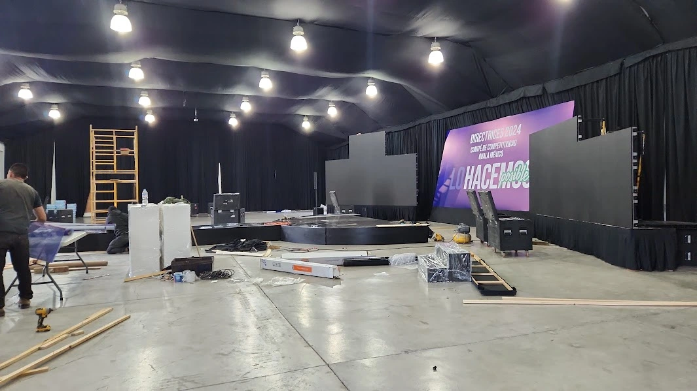
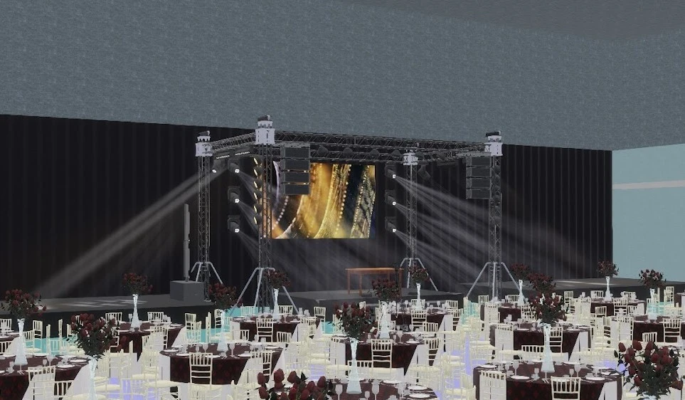
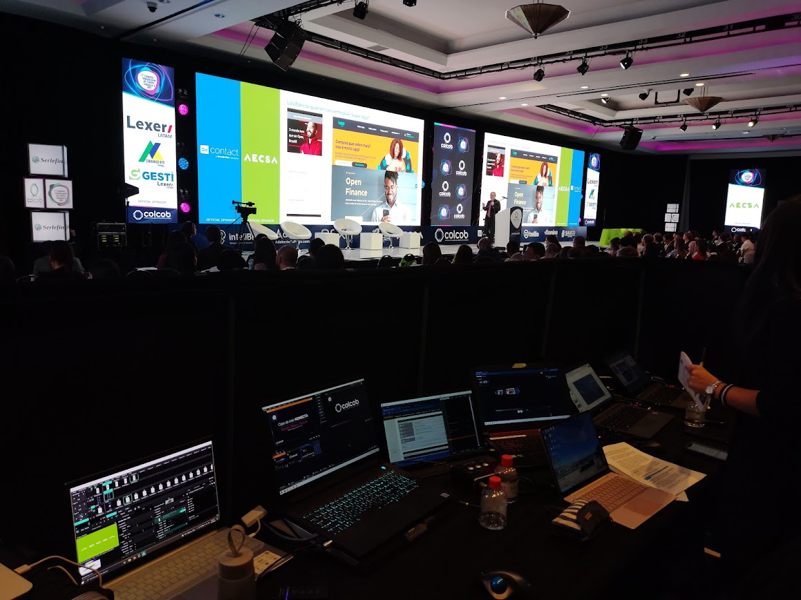
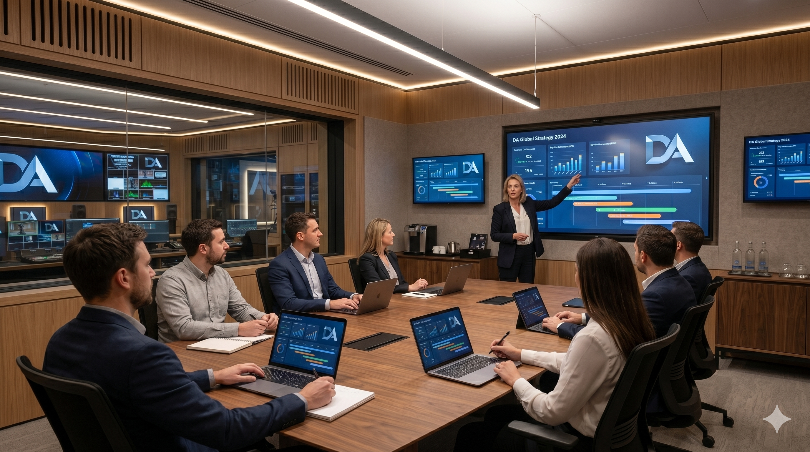

Producción Ejecutiva
Cómo planificar un evento corporativo sin improvisaciones
Metodologías y procesos para garantizar eventos exitosos.
Leer artículo →Artículos, análisis y tendencias sobre producción ejecutiva, streaming profesional, tecnología audiovisual, escenografía virtual y transformación digital para eventos.
Metodologías y procesos para garantizar eventos exitosos.
Leer artículo →
Aspectos técnicos que deben evitarse en eventos híbridos y virtuales.
Leer artículo →
Criterios para elegir tecnología alineada con los objetivos del evento.
Leer artículo →Conocimiento práctico basado en experiencias reales, tecnología audiovisual y producción de eventos.

Beneficios, costos y posibilidades para producciones modernas.
Leer artículo →
Cómo coordinar operación técnica y producción desde una única estructura.
Leer artículo →
Metodologías utilizadas para garantizar resultados medibles.
Leer artículo →
Procesos y herramientas para proyectos de alto nivel.
Leer artículo →
Redundancia, monitoreo y continuidad operativa.
Leer artículo →Factores clave para tomar decisiones acertadas.
Leer artículo →Producción ejecutiva, streaming profesional, consultoría tecnológica audiovisual y diseño de soluciones para eventos corporativos.
Contactar ahora